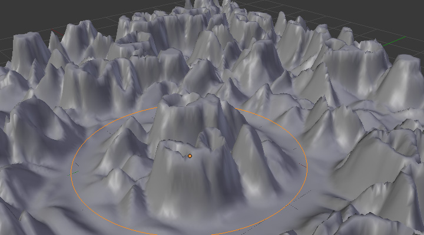
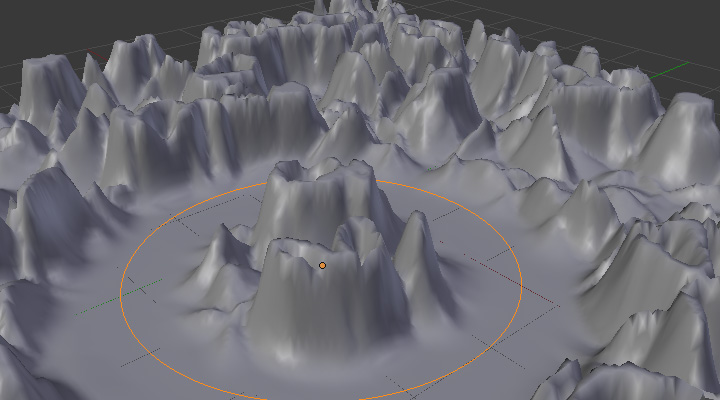

Vertex Weight Edit Modifier¶
{kind=link}
This modifier is intended to edit the weights of one vertex group.
The general process is the following, for each vertex:
- (Optional) It does the mapping, either through one of the predefined functions, or a custom mapping curve.
- It applies the influence factor, and optionally the vertex group or texture mask (0.0 means original weight, 1.0 means fully mapped weight).
- It applies back the weight to the vertex, and/or it might optionally remove the vertex from the group if its weight is below a given threshold, or add it if it is above a given threshold.
警告
This modifier does implicit clamping of weight values in the standard (0.0 to 1.0) range. All values below 0.0 will be set to 0.0, and all values above 1.0 will be set to 1.0.
Options¶
- Vertex Group
- The vertex group to affect.
- Default Weight
- The default weight to assign to all vertices not in the given vertex group.
- Group Add
- Adds vertices with a final weight over Add Threshold to the vertex group.
- Group Remove
- Removes vertices with a final weight below Remove Threshold from the vertex group.
- Falloff Type
Type of mapping:
- Linear
- No mapping.
- Custom Curve
- Allows the user to manually define the mapping using a curve.
- Sharp, Smooth, Root and Sphere
- These are classical mapping functions, from spikiest to roundest.
- Random
- Uses a random value for each vertex.
- Median Step
- Creates binary weights (0.0 or 1.0), with 0.5 as cutting value.
- Global Influence
The overall influence of the modifier (0.0 will leave the vertex group’s weights untouched, 1.0 is standard influence).
警告
Influence only affects weights, adding/removing of vertices to/from vertex group is not prevented by setting this value to 0.0.
- Vertex Group Mask
- An additional vertex group, the weights of which will be multiplied with the global influence value for each vertex. If a vertex is not in the masking vertex group, its weight will be not be affected.
- Texture Mask
An additional texture, the values of which will be multiplied with the global influence value for each vertex.
This is a standard texture data-block control. When set, it reveals other settings:
- Texture Coordinates
How the texture is mapped to the mesh.
- Local
- Use local vertex coordinates.
- Global
- Use vertex coordinates in global space.
- Object
Use vertex coordinates in another object’s space.
- Object
- The object to be used as reference for Object mapping.
- UV
Use a UV layer’s coordinates.
- UV Layer
- The UV layer to be used for UV mapping.
- Use Channel
Which channel to use as weight factor source/
- Red/Green/Blue/Alpha
- One of the color channels’ values.
- Intensity
- The average of the RGB channels (if RGB(1.0, 0.0, 0.0) value is 0.33)
- Value
- The highest value of the RGB channels (if RGB(1.0, 0.0, 0.0) value is 1.0)
- Hue
- Uses the hue value from the standard color wheel (e.g. blue has a higher hue value than yellow)
- Saturation
- Uses the saturation value (e.g. pure red’s value is 1.0, gray is 0.0)
注解
All of the channels above are gamma corrected, except for Intensity.
注解
You can view the modified weights in Weight Paint Mode. This also implies that you will have to disable the Vertex Weight Edit Modifier if you want to see the original weights of the vertex group you are editing.
Example¶
Using Distance from a Target Object’s Geometry
We are going to illustrate this with a Displace modifier.
Add a (10×10 BU) 100×100 vertices grid, and in Edit Mode, add to it a vertex group containing all of its vertices, as above. You can even further sub-divide it with a first Subdivision Surface modifier.
Now add a curve circle, and place it 0.25 BU above the grid. Scale it up a bit (e.g. 4.0 BU).
Back to the grid object, add to it a Vertex Weight Proximity modifier, in Geometry Distance mode. Enable Edge (if you use Vertex only, and your curve has a low U definition, you would get wavy patterns, see Fig. Wavy patterns.).

Distance from edges. |
{kind=link}
{kind=link}
Set the Lowest Distance to 0.2, and the Highest Distance to 2.0, to map back the computed distances into the regular weight range.
Add a third Displace modifier and affect it the texture you like. Now, we want the vertices of the grid nearest to the curve circle to remain undisplaced. As they will get weights near zero, this means that you have to set the Midlevel of the displace to 0.0. Make it use our affected vertex group, and that is it! Your nice mountains just shrink to a flat plane near the curve circle.
As in the previous example, you can insert a Vertex Weight Edit modifier before the Displace one, and play with the Custom Curve mapping to get a larger/narrower “valley”...

Concave-type mapping curve. |

Convex-type mapping curve. |
{kind=link}

Vertices with a computed weight below 0.1 removed from the vertex group.
You can also add a fifth Mask modifier, and enable Vertex Weight Edit ‘s Group Remove option, with a Remove Threshold of 0.1, to see the bottom of your valley disappear.
The blend-file, TEST_2 scene.